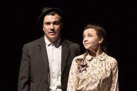
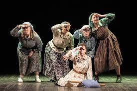

"Frunze de Dor", scris de Ion Druță, este o poveste de dragoste neîmplinită, plasată în perioada de după război, în Valea Razeșilor, unde sătenii așteptau cu nerăbdare scrisori de la cei plecați pe front.
Personajul principal este Ruxanda, o învățătoare tânără și frumoasă, care își trăiește viața la țară alături de mama și fratele ei mai mic. Ea este o persoană inteligentă și ambițioasă, care își dorește să facă o diferență în comunitatea ei prin educația pe care o oferă copiilor din sat.
În ciuda talentului ei de învățătoare, Ruxanda este nefericită din cauza faptului că iubirea ei pentru Gheorghe, un soldat care a luptat pe front, rămâne neîmplinită. Gheorghe nu se întoarce acasă, iar Ruxanda nu poate uita niciodată iubirea pe care o simțea pentru el.
În timp ce încearcă să-și trăiască viața la țară, Ruxanda se confruntă cu dificultăți financiare și sociale, care o determină să ia decizii grele, precum acceptarea unei căsătorii care nu îi oferă fericirea pe care și-o dorește.
Alături de Ruxanda, personajul principal este și poștașul Misa, care aduce scrisorile de pe front și devine o prezență importantă în viața sătenilor. El își face datoria cu devotament și este o sursă de speranță pentru cei care așteptau scrisori de la cei dragi aflați la război.

